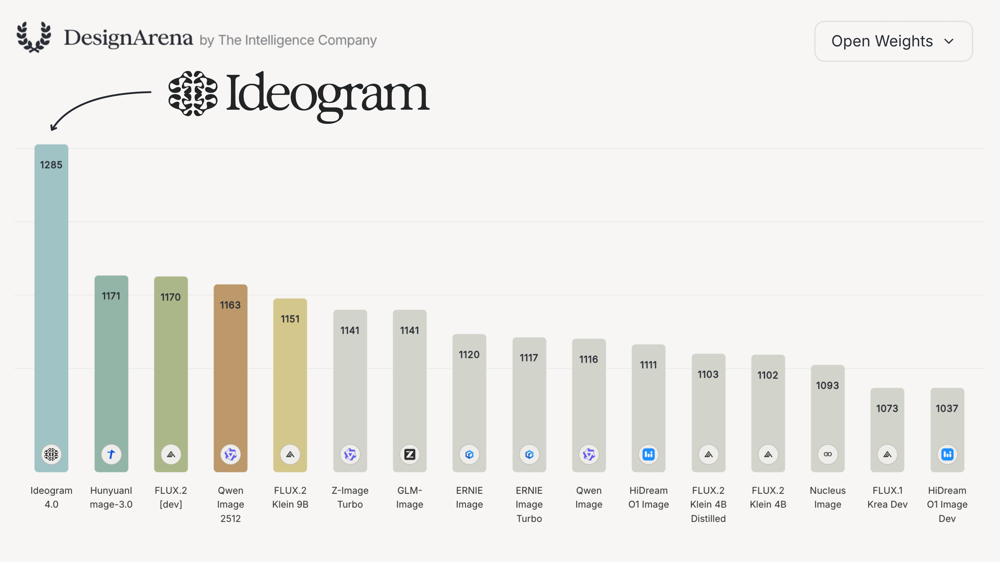
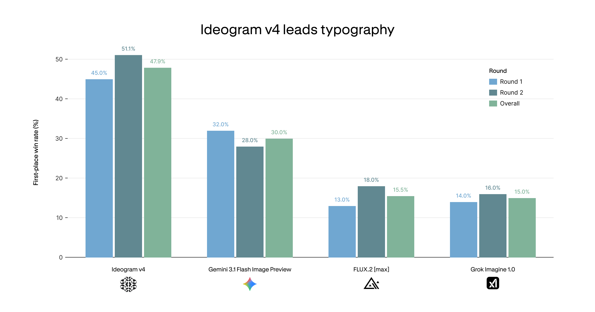
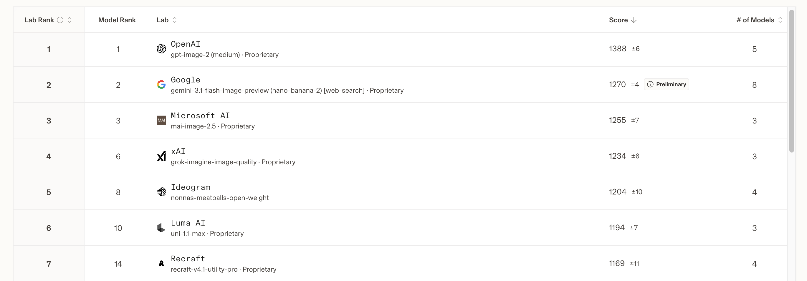
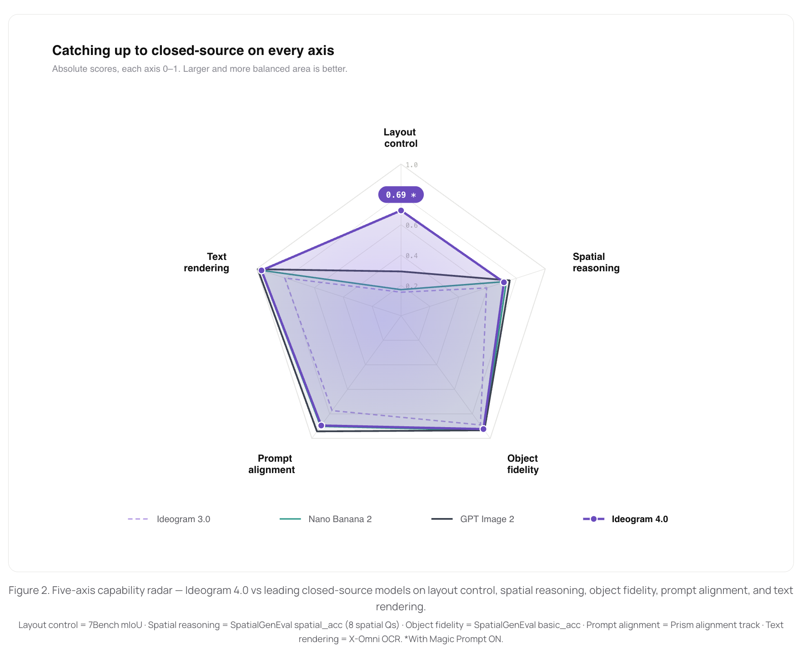
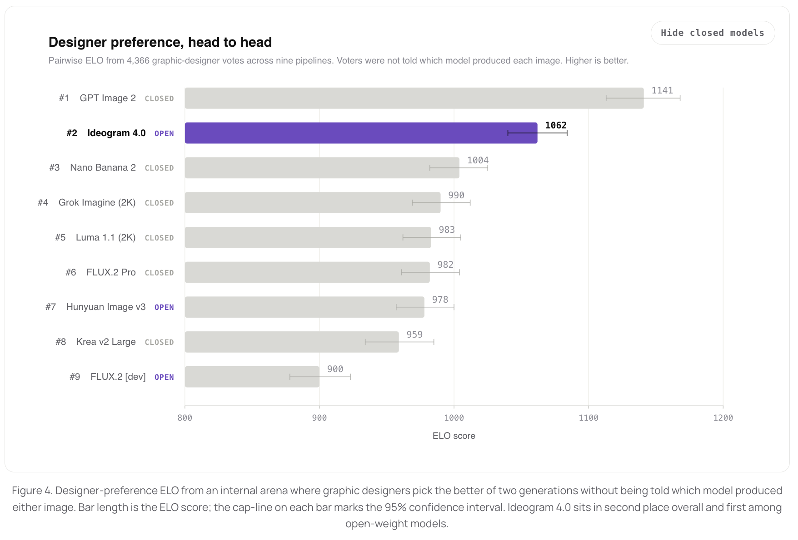

Ideogram 4: 9.3B 单流 DiT + Qwen3-VL 多层拼接 + 结构化 JSON prompt
1. 出发点 (Motivation)
Ideogram 在 2024-2025 一直是闭源 SaaS,以文字渲染和设计感两个长板出名。Ideogram 4 是他们第一次开源权重(9.3B 全参可下,fp8 / nf4 两个量化),时间点选在 2026/06/03 同步放代码 + weights + blog,没有 arxiv paper——只有 blog 文章 和 GitHub repo 里的 5 篇 docs。
定位:跟同期开源的 qwen-image-2-2026 / FLUX.2 [max] / Wan-Image 抢"中等参数(7-20B)、强排版、可商用-or-not 不一"这个区间。差异点声称是:
- 文字渲染保留 1-3 时代的强项(多语言)
- 结构化 JSON prompt 作为唯一训练 caption 格式 — 用户既可以发普通文本,也可以发 JSON 指定 layout / 颜色 / 风格
- 9.3B 比 FLUX.1-dev (12B) / Qwen-Image (20B) / SD3.5-Large (8B) 都更小一点,但每个 token 拿到的 text feature 更厚(13 层 Qwen3-VL hidden state 拼接)
不打算硬刚 Gemini 3 / GPT-Image-1 这种闭源旗舰(它们在 Design Arena 总榜上仍领先),目标是"open-weight 里的设计最优"。
2. 方法 (Method)
2.1 总体管线 (docs/pipeline.md)
prompt
│
├─► Qwen3-VL-8B-Instruct (FROZEN, text-only mode)
│ ↓ extract hidden states from layers (0, 3, 6, …, 33, 35) → concat
│ text_feat: (B, L_text, 4096×13 = 53248)
│
├─► noise z_1 ~ N(0, I)
│ ↓ shape (B, grid_h × grid_w, 128)
│ ↓ where grid = image_size / 8 / 2 (8× VAE + 2× patching)
│ ↓ 1024×1024 → 64×64 grid → 4096 image tokens
│ ↓ each token = 32 (latent ch) × 2² (patch) = 128 dim
│
▼
[ Ideogram4Transformer (TRAINABLE, 9.3B params) ]
├─ 34 × Ideogram4TransformerBlock:
│ ├─ Self-attention (QK-RMSNorm, MRoPE 3D)
│ ├─ SwiGLU MLP
│ └─ AdaLN scale/gate from timestep t-embedding
├─ FinalLayer (AdaLN + Linear)
│
▼ velocity prediction v(z_t, t) on image tokens only
[ Euler flow-matching sampler ]
├─ logit-normal noise schedule (resolution-adaptive mu)
└─ asymmetric CFG (uncond pass = image tokens only, no text padding)
│
▼ z_0 (denoised image latent)
[ KL VAE Decoder (FROZEN) ]
│
▼
PIL.Image
2.2 Single-stream DiT vs MMDiT (设计选择)
这是 Ideogram 4 跟 SD3 / FLUX 体系的关键架构差异。
- MMDiT (SD3 / FLUX): 两个独立的 transformer stream 处理 text 和 image,通过 attention 跨流交互。需要专门的 "text DiT block" 和 "image DiT block" 设计。
- Single-stream DiT (Ideogram 4, 也是 mrt-2026 / rep-forcing-2026 等近期工作走的路): text token 和 image latent token 拼成一根 sequence,过同一个 transformer。无需双流。代码体现:
repo/src/ideogram4/modeling_ideogram4.py:L317-L375 — Ideogram4Transformer.forward 主干
def forward(self, *, llm_features, x, t, position_ids, segment_ids, indicator):
# x: (B, L, 128) noise tokens (only meaningful where indicator==IMAGE)
# llm_features: (B, L, 53248) Qwen3-VL features (only meaningful where indicator==LLM)
# indicator: (B, L) per-token role mask
llm_token_mask = (indicator == LLM_TOKEN_INDICATOR).to(x.dtype).unsqueeze(-1)
output_image_mask = (indicator == OUTPUT_IMAGE_INDICATOR).to(x.dtype).unsqueeze(-1)
llm_features = llm_features * llm_token_mask
x = x * output_image_mask
x = self.input_proj(x) * output_image_mask # 128 → 4608
# Timestep → AdaLN params (shared by every block)
t_cond = self.t_embedding(t)
adaln_input = F.silu(self.adaln_proj(t_cond))
# Project Qwen3-VL features to model dim
llm_features = self.llm_cond_norm(llm_features)
llm_features = self.llm_cond_proj(llm_features) * llm_token_mask # 53248 → 4608
# Merge: at LLM positions add text features, at IMAGE positions add image latents
h = x + llm_features
# A learnable "I'm an image token" / "I'm a text token" embedding
image_indicator_embedding = self.embed_image_indicator(
(indicator == OUTPUT_IMAGE_INDICATOR).to(torch.long))
h = h + image_indicator_embedding
cos, sin = self.rotary_emb(position_ids) # MRoPE 3D
for layer in self.layers: # 34 blocks
h = layer(h, segment_ids, cos, sin, adaln_input)
return self.final_layer(h, c=adaln_input).to(torch.float32)
注意 h = x + llm_features — 因为 mask 互斥(同一个 position 不可能既是 LLM 又是 IMAGE),这其实是 sequence 内分段填充,不是同位置叠加。segment_ids 用于 packed batch 的 block-diagonal attention mask(防止跨 sample 串话)。
2.3 Text encoder: Qwen3-VL-8B + 13 层拼接
普通做法(SD3 / FLUX): 取 text encoder 最后一层 hidden state。
Ideogram 4 的做法: 从 Qwen3-VL-8B 的第 0/3/6/9/12/15/18/21/24/27/30/33/35 层(共 13 层)沿 feature 维拼接,得到 4096 × 13 = 53248 维 per-token。然后用 llm_cond_proj 一个 Linear 投到 4608 维(模型 emb_dim)。
文档解释: "early layers encode surface-level token information, while later layers encode deeper semantic meaning. Concatenating them gives the DiT access to the full spectrum." 即"多尺度语义"。
代码佐证:
repo/src/ideogram4/modeling_ideogram4.py:L24-L42 — Ideogram4Config llm_features_dim 的计算
@dataclass
class Ideogram4Config:
emb_dim: int = 4608
num_layers: int = 34
num_heads: int = 18
intermediate_size: int = 12288
adanln_dim: int = 512
# Latent dimension after patchification: ae_channels (32) * patch_size**2 (4) = 128.
in_channels: int = 128
# Hidden size of Qwen3-VL-8B-Instruct multiplied by the number of layers we extract
# Qwen3-VL hidden size = 4096
llm_features_dim: int = 4096 * len(QWEN3_VL_ACTIVATION_LAYERS)
# → 4096 × 13 = 53248
rope_theta: int = 5_000_000
mrope_section: tuple[int, ...] = (24, 20, 20)
Text encoder 是冻结的,只跑前向。13 层 feature 提取一次后缓存,不影响推理 cost(VLM 一次过的成本相对 DiT 34 层 × 50 步小)。
对比 rep-forcing-2026: RF 是把 understanding encoder 的特征量化成离散 token、放进 sequence 自回归预测; Ideogram 4 是把 text encoder 的连续 hidden state 直接 当 condition feature 跟 noise token 一起进 transformer。两者都"复用 understanding 路径",但 RF 解耦 + 离散化,Ideogram 4 连续 + 即插即用。
2.4 MRoPE: 让 text 和 image 共享 3D 位置空间
普通 RoPE 是 1D 位置编码(适合纯 text)。SD3 的 MMDiT 给 image 用 2D RoPE,给 text 用 1D RoPE,但因为是双流不冲突。
单流 DiT 里 text + image token 混在一起,如何编码位置?Ideogram 4 用 MRoPE (Multimodal RoPE): 每个 token 拿到一个 3D position (t, h, w):
- Text token: 1D 位置广播到 3 轴 →
(pos, pos, pos) - Image token:
(0, h_grid_idx, w_grid_idx)(静态图 t=0)
head_dim 是 256,按 mrope_section = (24, 20, 20) 切成 3 段 分别编码 (t, h, w) 三个轴。视频或多帧场景用 t 维度,这里恒为 0。
repo/src/ideogram4/modeling_ideogram4.py:L67-L106 — Ideogram4MRoPE 3 轴交错频率
class Ideogram4MRoPE(nn.Module):
def __init__(self, head_dim, base, mrope_section):
super().__init__()
inv_freq = 1.0 / (base ** (torch.arange(0, head_dim, 2, dtype=torch.float32) / head_dim))
self.register_buffer("inv_freq", inv_freq, persistent=False)
self.mrope_section = tuple(mrope_section) # (24, 20, 20)
self.head_dim = head_dim
mrope_section 的三个数加起来 = head_dim/2 (即 24+20+20 = 64,head_dim = 128 — 注意这里是 head_dim=256, 256/2=128 不等于 64;真实代码里 (24,20,20) 应该是按某种 stride 解读, 具体实现见 forward)。
关键性质: text token 用 1D 位置广播到 3 轴 → 它们能"被 image token 看到"也能"看到 image token",通过 attention 互动。没有额外 cross-attention 模块,纯靠位置编码 + full attention 就让两类 token 共享一个统一空间。这是单流 DiT 能 work 的原因。
2.5 Flow matching + Logit-normal schedule + Asymmetric CFG
Flow matching 训练目标: 模型预测速度场 \(v(z_t, t)\),定义反向 ODE: \(dz/dt = v(z_t, t)\)。推理时从 \(z_1 \sim \mathcal{N}(0, I)\) 出发,Euler 积分回 \(z_0\):
—— 翻译: 这是 rectified flow / flow matching 的标准范式 (diffusion-opd-2026 / flow-opd-2026 / SD3 / FLUX 一脉相承)。Ideogram 4 没在数学上发明新东西,沿用主流。
Logit-normal schedule 控制采样步在哪些噪声水平上密集:
\(\mu\) 越大,采样在大噪声端越密。Paper 关键 trick: 按分辨率自适应 μ:
—— 翻译: 大分辨率图含更多低频信息,需要在大噪声水平多花步数才能压住全局结构;512×512 base,1024×1024 时 μ 增加 ~0.7。这跟 SD3 的 timestep shift 思路一致, 但用了 logit-normal 而非 shifted linear。
代码实现极简洁:
repo/src/ideogram4/scheduler.py:L13-L40 — LogitNormalSchedule + 分辨率自适应
@dataclass(frozen=True)
class LogitNormalSchedule:
mean: float
std: float = 1.0
logsnr_min: float = -15.0
logsnr_max: float = 18.0
def __call__(self, t: torch.Tensor) -> torch.Tensor:
t = t.to(torch.float64)
z = torch.special.ndtri(t) # inverse normal CDF
y = self.mean + self.std * z
t_ = torch.special.expit(y) # sigmoid
t_ = 1 - t_
t_min = 1.0 / (1 + math.exp(0.5 * self.logsnr_max))
t_max = 1.0 / (1 + math.exp(0.5 * self.logsnr_min))
return t_.clamp(t_min, t_max).to(torch.float32)
def get_schedule_for_resolution(image_resolution, known_resolution=(512, 512),
known_mean=1.0, std=1.0):
num_pixels = image_resolution[0] * image_resolution[1]
known_pixels = known_resolution[0] * known_resolution[1]
mean = known_mean + 0.5 * math.log(num_pixels / known_pixels)
return LogitNormalSchedule(mean=mean, std=std)
Asymmetric CFG: 每步两次 forward — conditional pass 全 sequence (text + image),unconditional pass 只走 image token,把 text 部分 zero out 跳过。这省下 conditional/unconditional 之间 text token 的重复计算(对长 JSON prompt 节省可观)。Guided velocity:
Per-step CFG schedule: 不是恒定的 gw。V4_QUALITY_48 preset 用 gw=7 跑前 45 步,然后 gw=3 跑最后 3 步 "polish"(降低 guidance,避免 over-saturation):
repo/src/ideogram4/sampler_configs.py:L7-L29 — 3 个 preset
PRESETS: dict[str, SamplerParameters] = {
"V4_QUALITY_48": SamplerParameters(
num_steps=48,
guidance_schedule=(3.0,) * 3 + (7.0,) * 45, # 索引 0 = 最后一步; 倒序!
mu=0.0, std=1.5,
),
"V4_DEFAULT_20": SamplerParameters(
num_steps=20,
guidance_schedule=(3.0,) * 2 + (7.0,) * 18,
mu=0.0, std=1.75,
),
"V4_TURBO_12": SamplerParameters(
num_steps=12,
guidance_schedule=(3.0,) * 1 + (7.0,) * 11,
mu=0.5, std=1.75,
),
}
(注意: guidance_schedule 是倒序索引 — index 0 是最后一步 "polish",index N-1 是第一步。这点 docstring 强调过, 但很容易踩。)
2.6 VAE + Patchification
普通 KL VAE: (B, 3, H, W) → (B, 32, H/8, W/8) (8× 空间压缩,32 通道 latent)。
Ideogram 4 在 DiT 输入前再做 2×2 patchify: 32 通道 latent grid → 每 2×2 像素合并成 1 个 128 维 token。
总压缩比 16×: 1024×1024 image → 64×64 token grid,每 token 128 维。Sequence 长度 = 4096 image tokens + ≤2048 text tokens (max)。
2.7 结构化 JSON Prompting (Ideogram 4 的独特训练数据)
所有训练数据的 caption 都是 JSON(不是自然语言文本):
{
"high_level_description": "A golden retriever riding a skateboard down a sunny sidewalk.",
"style_description": {
"aesthetics": "warm, playful, vibrant",
"lighting": "bright afternoon sunlight, long soft shadows",
"photo": "shallow depth of field, eye-level, 85mm lens",
"medium": "photograph",
"color_palette": ["#F5C542", "#87CEEB", "#4A4A4A", "#FFFFFF", "#2E8B57"]
},
"compositional_deconstruction": {
"background": "A sun-drenched suburban sidewalk lined with green hedges...",
"elements": [
{"type": "obj", "bbox": [200, 300, 800, 900],
"desc": "A golden retriever with a fluffy coat..."},
{"type": "obj", "bbox": [250, 750, 750, 950],
"desc": "A worn red skateboard with black wheels..."}
]
}
}
字段含义:
high_level_description: 一句话总结style_description: 美学、光照、媒介、色板 (hex)compositional_deconstruction: 背景 + 一个 elements 数组,每个 element 带bbox(4 个 0-1000 归一化坐标) 和desc
用户可发普通文本 (model 仍 work),也可发 JSON (官方说"显著更好,尤其是 controllability / spatial layout / style fidelity")。配套 magic_prompt 功能调 Ideogram API 把自然语言扩展成 JSON。
这跟 mrt-2026 把 layout 用 bbox + RoPE 编进 token 不同 — Ideogram 4 把 bbox 信息字面写进 caption 字符串,让 Qwen3-VL 编码 (Qwen3-VL 在视觉理解中本来就见过 bbox 字面量,有处理能力)。没有额外架构改动承担 layout 信息。
2.8 模型规格一览
| field | value | 备注 |
|---|---|---|
| 总参数 | 9.3B | 仅 DiT;text encoder 8B 不算在内 |
| Transformer 层数 | 34 | |
emb_dim |
4608 | |
num_heads |
18 | head_dim = 4608/18 = 256 |
intermediate_size |
12288 | SwiGLU MLP,内部 3 个 Linear |
adanln_dim |
512 | timestep embedding 经过这个 bottleneck 后投出 modulation |
in_channels |
128 | 32 VAE channels × 2² patch |
llm_features_dim |
53248 | 4096 × 13 layers |
rope_theta |
5,000,000 | 大 base 利于长序列 |
mrope_section |
(24, 20, 20) | t/h/w 三轴维度分配 |
| max text tokens | 2048 | |
| 分辨率范围 | 256 - 2048 (16 的倍数) | 长宽比最高 6:1 |
| Sampler | Euler flow-matching | |
| Schedule | Logit-normal, μ 按分辨率自适应 | |
| CFG | Asymmetric (uncond 只 image), per-step schedule | |
| Quantization release | fp8 (all hw), nf4 (CUDA) | |
| License | Ideogram 4 Non-Commercial | ⚠️ 不能商用 |
3. 结论 (Key Findings — 来自 README benchmark)
⚠️ Ideogram 4 没有 arxiv paper,所有性能数字来自 README benchmark section + blog (我没拿到 blog 全文,blog URL 403)。没有同行评审,Self-reported,需要打折看。
3.1 Design Arena (open-weight 部分)

3.2 ContraLabs 排版评估

3.3 LMArena

3.4 学术 benchmark

3.5 内部 benchmark

4. 实现细节 (Implementation Notes)
代码 release 完整,关键点:
- 没有
__init__显式调用 nn.Module super: 看Ideogram4MRoPE.__init__调用了super().__init__()— OK,这只是我读代码顺手注意的格式细节,无问题。 segment_ids用于 packed batch:attn_mask = (segment_ids.unsqueeze(2) == segment_ids.unsqueeze(1)).unsqueeze(1)— 一个 (B, 1, L, L) 的 block-diagonal mask,允许把多个不等长 sample 拼成一个 packed batch 训练/推理,不同 sample 之间不互相 attend。推理时单 batch 用不上,但训练时省 padding。embed_image_indicator(2-entry): 一个学习的 2-entry embedding,加在 image token 上("我是 image token")vs LLM token (0)。这是单流 DiT 区分两类 token 的"类型 embedding",不依赖 RoPE。- AdaLN modulation: 每个 block 4 个参数 (scale_msa, gate_msa, scale_mlp, gate_mlp),由 timestep 通过
adaln_proj(4608→512) 再扩张到 4 × hidden_size 得到。gate 用tanh不是 sigmoid。scale = 1 + raw_scale让初始化 t→0 时 modulation 近似单位元。 - VAE 解耦: VAE 跟主 DiT 完全分离 — 训练时 freeze, 推理时一次性 decode。代码 (
autoencoder.py) 410 行实现了一个标准 KL autoencoder,VAE 通道 32,8× 压缩。 - Latent normalization:
latent_norm.py272 行做 per-channel shift/scale 校准 — VAE 输出的 latent 不是均匀分布的,先归一化再给 DiT。Decoder 端反归一化。 - Caption verifier:
caption_verifier.py362 行 — 一个独立 LLM 校验 JSON caption 格式是否对。推理时跑一遍,如果用户的 JSON 不合规,fallback 到原始字符串。 - Magic prompt 调 API:
magic_prompt.py362 行调 ideogram.ai 的 endpoint 把短文本扩展成 JSON。需要IDEOGRAM_API_KEY。本地推理时可选,不用也行,只是 quality 会差。 - 量化:
quantized_loading.py278 行 — 支持 fp8 (e4m3) 和 bnb-4bit (nf4) 两种 weight-only 量化。fp8 全平台,nf4 只能 CUDA。量化只 swap Linear 层,attention/norm 不动。 run_inference.pyCLI 是入口脚本。最简调用:python run_inference.py --prompt "..." --output out.png --quantization nf4。
Paper-vs-code 一致性: 没 paper, 但 README + docs 跟代码细节自洽。一致性 = "代码本身就是论文",没有 train-time vs release 的 mismatch 风险(因为只 release 了 inference)。
⚠️ 没有 release 训练代码 — 只 release inference。所以无法验证:
- 训练 loss 形式(应该是 flow matching MSE,但没代码确认)
- 训练数据规模(blog 没透露)
- 训练算力(blog 没透露)
- 蒸馏与否(
V4_TURBO_12只 12 步出图,推测有蒸馏,但 release 里看不到 teacher model 或 distillation loss)
License 警示: Ideogram 4 Non-Commercial 协议 — 不能商用、不能用 output 训其他模型、不能 redistribute。仅供研究。
5. 批判性总结 (Critical Assessment)
5.1 优点
- 第一次开源,且开得相当完整: 9.3B DiT 权重 + 完整 inference 代码 + 5 篇 docs + 3 个 sampler preset + 量化版本。Ideogram 之前是 SaaS-only,这一步对社区是显著贡献。
- 架构选择有内部一致性: 单流 DiT + MRoPE + Qwen3-VL 多层拼接是同一套"减少模态特化模块"的哲学。代码 379 行 modeling_ideogram4.py 干净简洁,适合做 baseline。
mu按分辨率自适应(get_schedule_for_resolution): 一个朴素但有效的工程 trick,SD3 的 timestep shift 一脉。代码两行,跨分辨率部署不用每个 size 重训。- 结构化 JSON caption 是真的有差异化: 多数 T2I 模型只在自然语言上训,Ideogram 4 强制 JSON → 用户可以精确给 bbox、color palette、style 字段,而不是把这些塞进一句话指望模型理解。配套 magic_prompt 让普通用户也能用。
- Asymmetric CFG 是个小但聪明的优化 — 长 JSON prompt 时 uncond pass 不用过 text 部分,真省 compute (~2× sequence length 一半计算)。
- 排版 + 多语言: ContraLabs 47.9% 一胜率是个硬数字。9.3B 在文字渲染上击败 12B FLUX.2 / Gemini Nano Banana 2,工程上很扎实。
5.2 不足 / 疑点
- 完全没有 arxiv paper, 没有 peer review: 所有 benchmark 数字都是 Ideogram 自报,Design Arena / LMArena / ContraLabs 是第三方但样本量小 (ContraLabs 才 10 个评委),X-Omni / 7Bench 自动指标可靠性也存疑。Blog 文章 (URL 403 拿不到全文) 也只是营销稿。
- 训练数据完全黑盒: blog 不公开训练数据来源、规模、license。"trained from scratch" 这个说法在开源社区有意义,但用了什么数据没说,版权风险无法评估。
- 训练代码 + 蒸馏代码不开源: V4_TURBO_12 (12 步) 几乎肯定有蒸馏(教师 → 学生),但代码里看不到。学术研究无法复现训练流程。
- License 限商: Non-Commercial 意味着任何商业产品(包括服务、玩具、demo with revenue)都不能用 — 比 FLUX.1-dev (non-commercial) 一样限制,但比 Qwen-Image (Apache 2.0 据说) / SDXL (CreativeML Open RAIL++) 严。
- Magic prompt API 依赖: 用户体验最佳路径是发 JSON。但 JSON 太麻烦,默认 fallback 是调 Ideogram API 让远程 model 扩展 — 这等于免费版必须联网 + 给 Ideogram 看你的 prompt。隐私+离线场景不可用。
- 没有 image-to-image / inpainting / editing: 当前 release 只有 text-to-image。Ideogram SaaS 上有 magic prompt / edit / upscale 等,开源只放了 base。
- 9.3B + Qwen3-VL-8B = 17.3B 总载入显存: 即使 fp8 量化也至少 30 GB+ 显存,nf4 也得 20 GB+。消费级单卡(24GB 4090)勉强,16GB 卡跑不起。
- VAE 用 SD3.5 / FLUX 同款 KL VAE 系族 (32 channels): 没说是否是自训的,也没引用上游。如果是借用别人的 VAE,跟 rep-forcing-2026 论证 "VAE bottleneck-free" 的方向反着走 — 但 Ideogram 4 也没说 VAE 是不是 bottleneck。
- 没有跟 qwen-image-2-2026 直接对比: 两者都 9-20B 区间 + 用 Qwen 系 text encoder + 主打中英文文字渲染,是直接对手。Ideogram benchmark 里没列 Qwen-Image 2.0,可能 Qwen-Image-2.0 同期没 release 完整数据。
5.3 适用 vs 不适用
- ✅ 适用: 研究者想拿一个 modern single-stream DiT 实现来读 + fine-tune (前提是合 non-commercial 协议)。Ideogram 4 代码极简洁,适合做实验底座。
- ✅ 适用: 个人 / 学术用户做设计原型 / 排版 / 多语言文字渲染 — Ideogram 4 在这些场景上确实是 open-weight 最强之一。
- ✅ 适用: 学习 MRoPE / 单流 DiT / 多层 text encoder 拼接 / asymmetric CFG / per-step CFG schedule 等具体 trick 的实现细节。
- ❌ 不适用: 商业产品 / SaaS / 给客户的 demo。Non-Commercial 协议禁止。
- ❌ 不适用: 消费级硬件 (< 20 GB VRAM)。即使 nf4 也吃力。
- ❌ 不适用: 离线场景 + 想要最高质量。最佳路径需要联网调 magic_prompt API。
- ⚠️ 谨慎: 信任 benchmark 数字时打折看,尤其是 Ideogram 内部 benchmark。
5.4 进一步阅读
- 单流 DiT 同期同类:
- mrt-2026 (Canva MRT) — 也是 Qwen-Image 单流, regional latents + MRoPE 编 layout
- rep-forcing-2026 (Representation Forcing) — pixel-space + MoT 三 expert,通过 rep token 解耦语义
- qwen-image-2-2026 (Qwen-Image 2.0) — Qwen 自家的 T2I,同样 Qwen3-VL 系列 text encoder
- MRoPE 的来源: Qwen2-VL paper (2024) 提出 — Ideogram 4 沿用同一套。
- Logit-normal schedule: SD3 (Stable Diffusion 3, 2024) paper 提出, FLUX 沿用。
- Asymmetric CFG: 不是 Ideogram 首创,SD3 / FLUX 也都这么做。
- Flow matching: Lipman et al. 2023 / Liu et al. 2022 (rectified flow);Ideogram 4 没在数学上发明新东西。
- 单流 vs 双流 DiT 的讨论: 单流的优势在简洁、易扩展到多模态(因为不需要再加新的 stream);双流(MMDiT)的优势在 text / image 可以用不同 norm / FFN 容量。Ideogram 4 选单流,跟近期工作潮流一致 (BAGEL / Janus 也是)。
讨论 / Comments
评论托管在本仓库的 GitHub Discussions, 需 GitHub 账号。